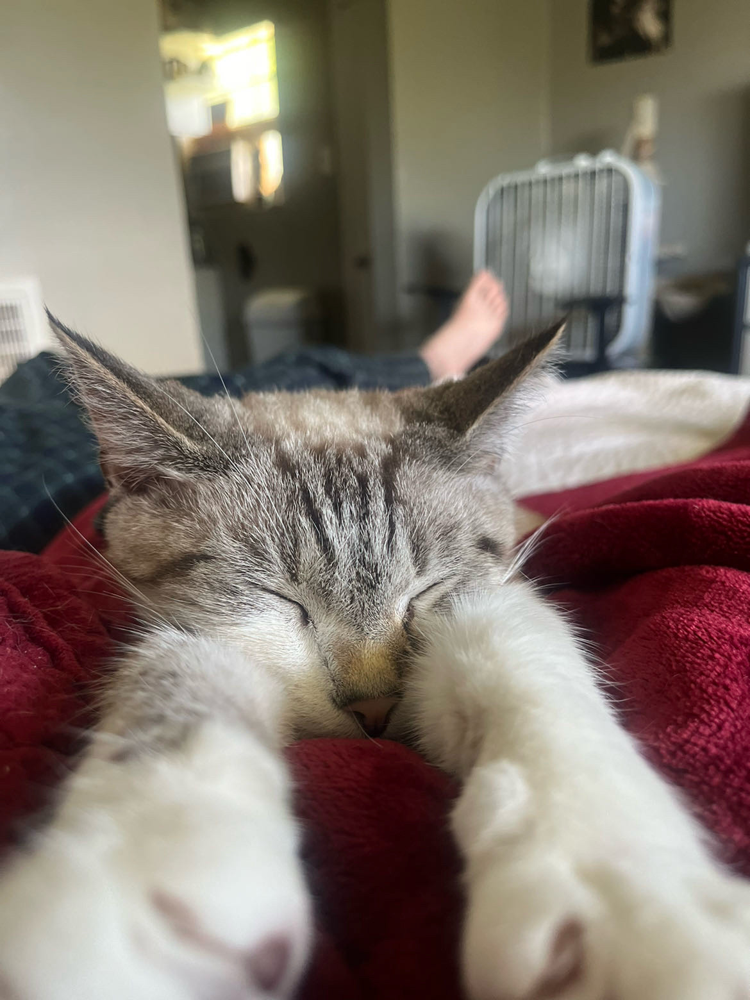
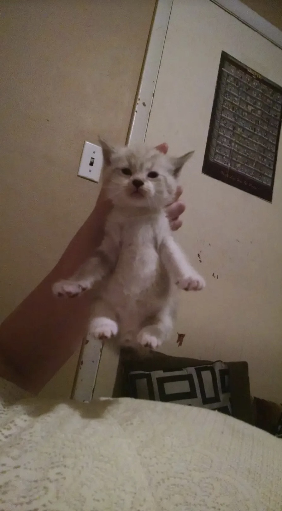

Time for Some Introductions!
Meet my partner's baby:
Nubs
About Nubs
Age: 8
Breed: American Shorthair
Favorite Activities: Nubs loves laying in the sun, complaining, judging you, and getting pets from Vincent first thing in the morning.
Nubs's Story
Nubs was one of the kittens in a litter a cat my partner's family used to own had. She was the only one they kept, and they named her Nubscout because she was born with no tail. She's been with them for nearly 9 years and she will continue to be with them for many more.
Nubs's Personality
Nubs is an old little lady whose meow sounds like she's been smoking 2 packs a day for 20 years. She does not like any other cat besides Kylo, and even then she still beats him up constantly. The only people she loves are me and my partner, but even then her patience is limited. She can be very affectionate and playful, but other times she can be very rude.
Fun Facts About Nubs
- She has no tail.
- The first thing she does every morning is smack her head in Vincent's hand to recieve pets.
- She hops more like a rabbit than a cat.
- Vincent is her absolutely favorite person.